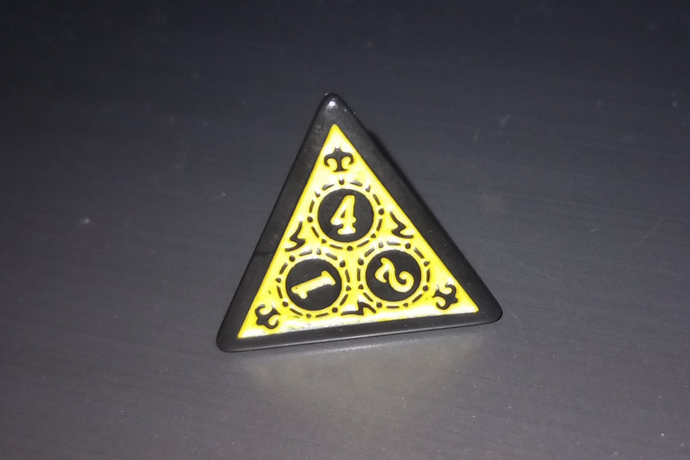
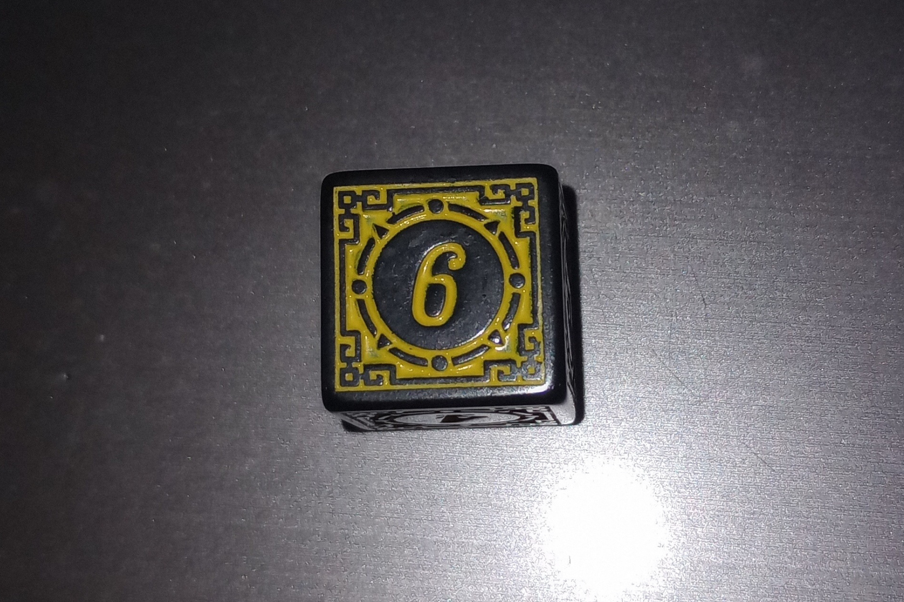
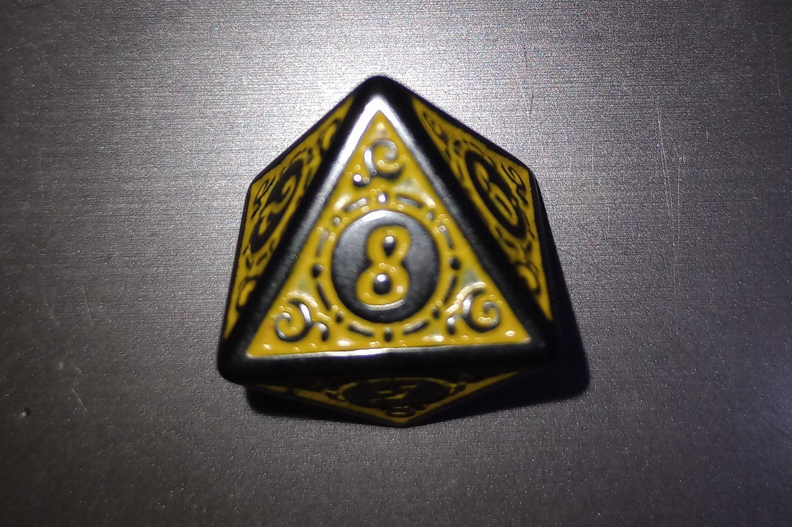
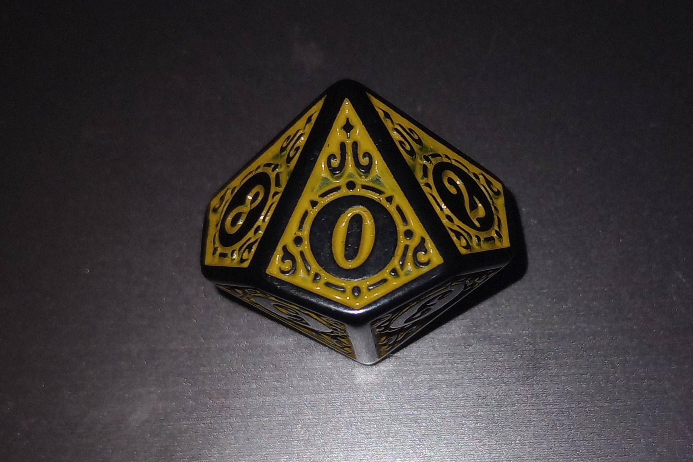
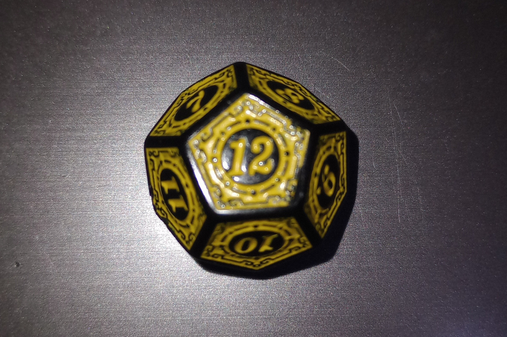
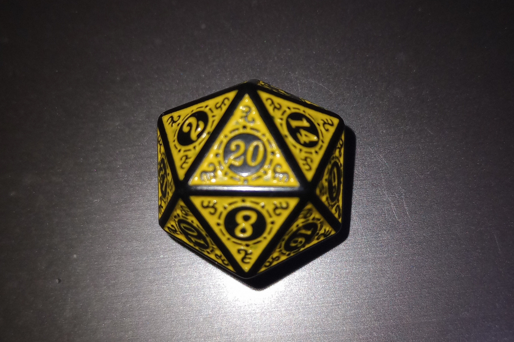
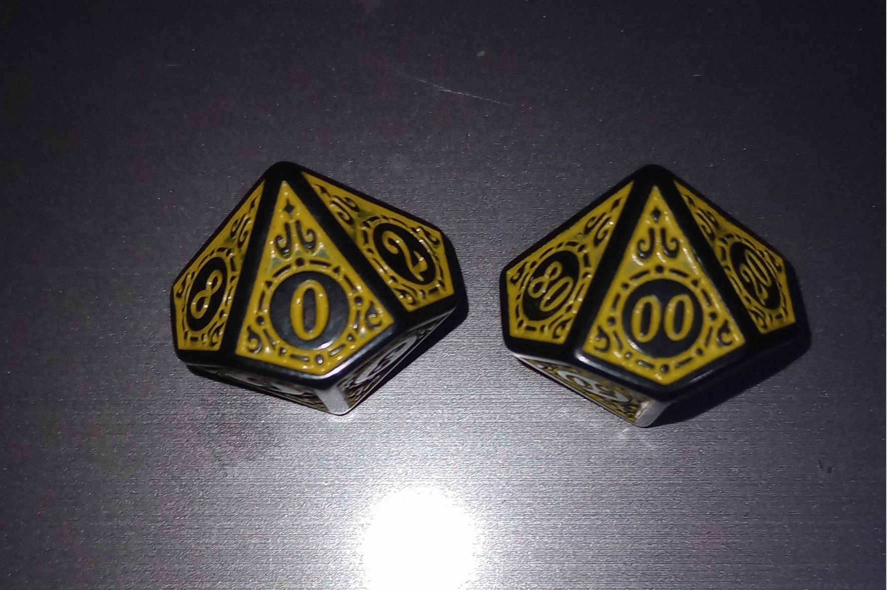

Esses dados são o que definem o que acontece em um jogo de rpg de mesa.
Aqui podemos mostrar e falar sobre alguns dados o pra que eles geralmente são usados em um jogo de rpg.
o dado de 4 faces funciona da seguinte maneira o numero que estiver na ponta e o valido e em um rpg Esse dado Às vezes é usado para o mestre poder pedir a rolagem desse dado para determinar situações aleatórias. Por exemplo, se um determinado inimigo pegou fogo com seu ataque flamejante ou não. Se tirar um número par, ele pega fogo, se rolar ímpar, não pega.
O Dado D6 é o mais famoso por ser um dado que todo mundo já viu e o mais comum e esse dado é bastante usado em rpg's de mesa é bem usado pra definir danos e varias situações especificadas pelo mestre.
O dado D8 é outro dado que é bem usado em rpg's de mesa pra dano geralmente usados combinados com outros dados de rpg.
O D10 é usado pra Dano tambem assim como o D8 e D6
O D12 assim como os outros que são usados pra dado ele tambem é usado pra esse proposito
O Dado D20 é o dado mais famoso entre pessoas que conhecem rpg um dos dados mais usados é esse e ele define seu teste por exemplo existe uma DT que é basicamente o numero do teste,por exemplo(de novo) a DT é quize e você precisa tirar mais ou quize e fazer com sucesso a ação que escolheu
Esse pode ser um dos dados pra coisas mais especificas
em um rpg de mesa mais antes de explicar o como ele é usado no jogo.
É bom explicar como ele é jogado o "D100" você joga dois dados o d100 que na verdade
são dez lados que vão do 10 e vai pulando de 10 em 10 até o 90 e 00 e o D10 para formar
um número de três dígitos.EX:Tirei 30 no D100 e 5 no D10 formando o número 35.se for 00 e 1 é 1. e 10 e 10 é 100
Agora como pode ser usado em jogo,por exemplo pra um sistema que envolva porcentagem.